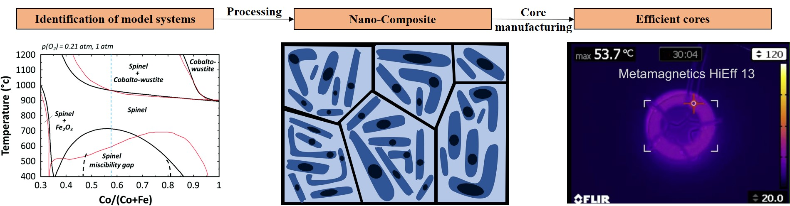

Thermal Processing and Characterization of Soft Magnetic Nanocomposites
Primary Researcher: Dr. Ahmed Talaat
Controllable and fast heating profiles provide unique capabilities to realize enhanced soft magnetic properties of amorphous and nanocrystalline materials in conventional nanocrystalline alloys, as well as alloy chemistries for which carefully controlled annealing processes play a critical role in realizing desired properties tailored within a large degree of flexibility.
We perform fundamental research pursuing innovative strategies to develop unique electromagnetic (EM) thermal processing enabling ultrafast phase transformations of metal amorphous nanocomposite (MANC) alloys. Traditional MANC alloys are usually obtained by a two-stage synthesis route: first, by processing of an amorphous alloy through rapid solidification, followed by isothermal treatment promoting partial crystallization which limits the ultimate saturation magnetization attainable. Novel EM processing can achieve desired microstructures and properties with reduced glass former content thereby increasing the saturation magnetization, which allows for dramatically higher power density and reduced cost for application in end-use components such as motors, transformers, and inductors relevant for vehicle / aircraft electrification and power electronics.
Soft Magnetic Ferrites for Next-Generation Power Electronic Applications
Primary Researcher: Suraj M.V.
 Source: Left: T. M. C. Dinh, A. Barnabé, M. A. Bui, C. Josse, T. Hungria, C. Bonningue, L. Presmanes and P. Tailhades, "FIB plan view lift-out sample preparation for TEM characterization of periodic nanostructures obtained by spinodal decomposition in Co1.7Fe1.3O4 thin films," CrystEngComm, 2018,20, 6146-6155. Right: Parisa Andalib, Vincent G. Harris, "Grain boundary engineering of power inductor cores for MHz applications," Journal of Alloys and Compounds, Volume 832, 2020, 153131.The next generation of power electronics is heading towards operating frequencies in the GhZ range. This will require engineering of materials better than the current state of art having enhanced magnetic and electrical properties, consequently attaining lower losses and enhanced performance. The current state of the art technology involves grain boundary engineering of Mn-Zn/Ni-Zn ferrites using magnetic/non-magnetic insulating oxides for property enhancements.
We aim at achieving further enhancements by nano-structuring the Mn-Zn and Ni-Zn ferrites to create nanocomposites. Nano-structuring of these ferrites will be induced either via a self-assembly processes or by the application of external stimuli during processing. Thermodynamic modelling using Thermo-Calc is carried out to identify model systems which are suitable for this approach. Effect of external fields i.e. magnetic, isotropic stress etc. during processing on the microstructure are being investigated and will be compared to thermodynamic and kinetic modelling results. Leveraging self-assembly/nano-structuring of these ferrites will help us develop materials with lower losses and operating capabilities at Ghz frequencies.